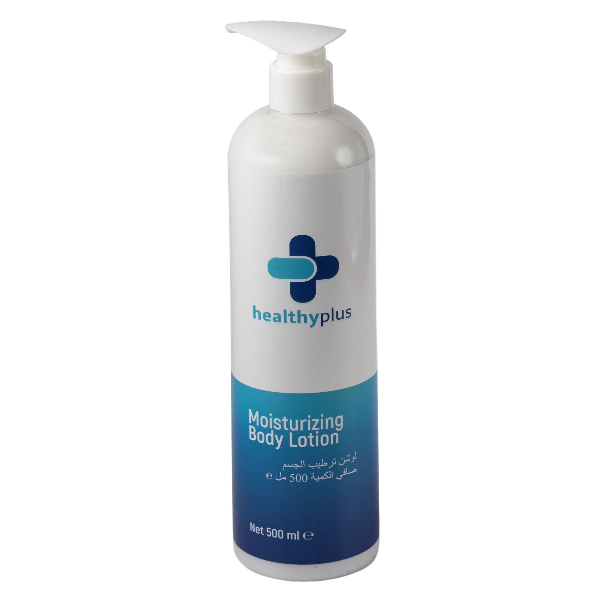
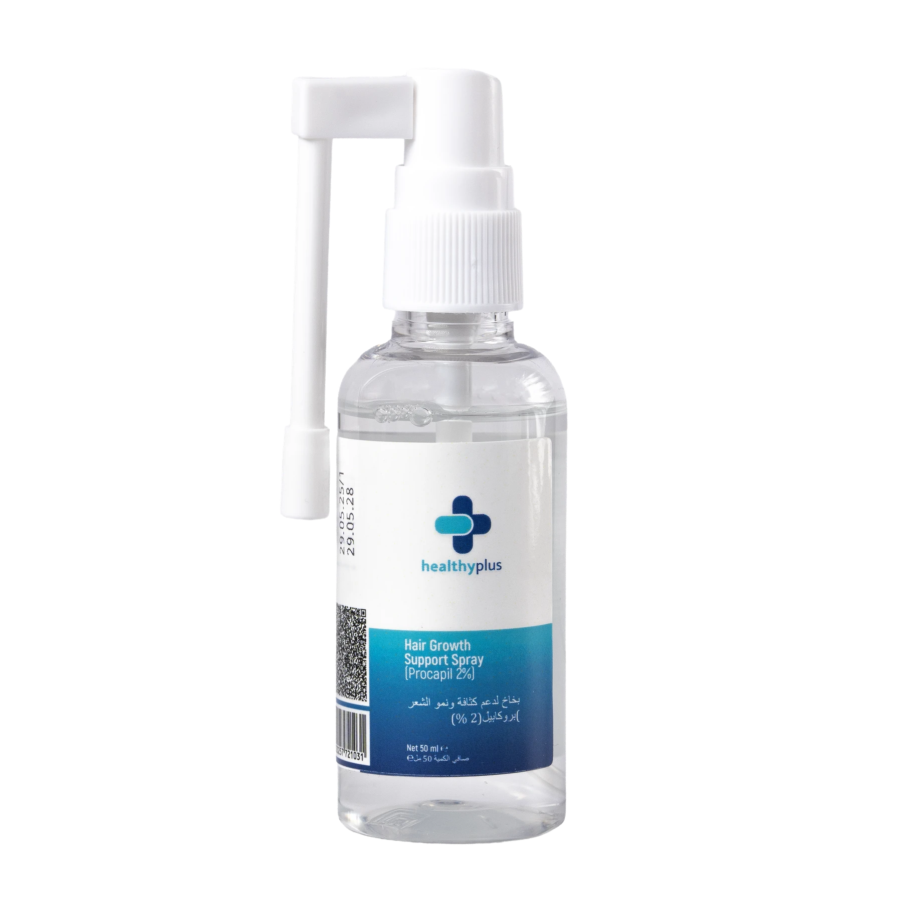
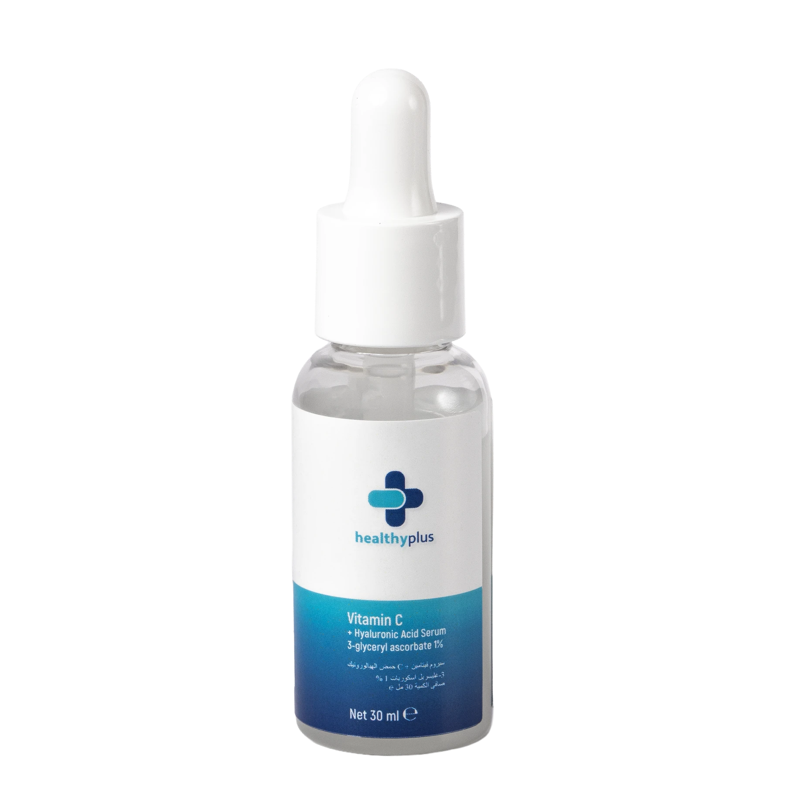
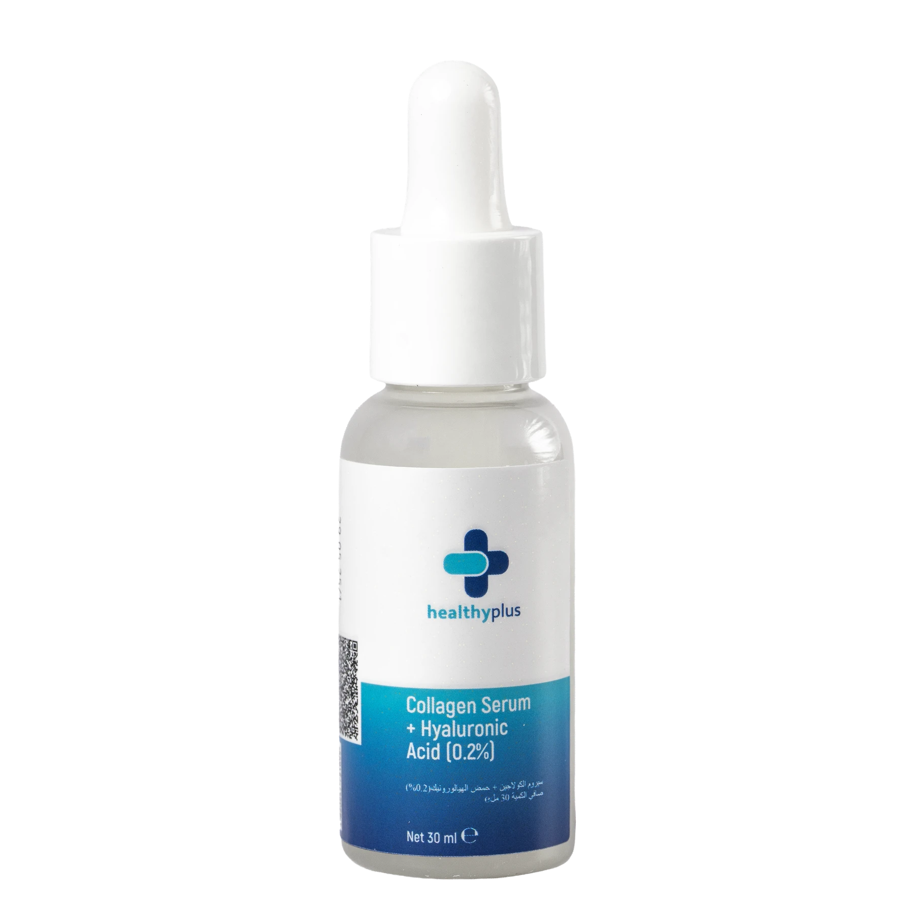

Body Lotion500 MLPOLISH-DEVELOPED EUROPEAN CARE
Intelligentcare, madebeautiful.
Six focused formulas designed to work beautifully with your everyday ritual.
Explorethe formulas ↓

Support SprayPROCAPIL® 2%
Vitamin C30 MLSCROLL TO DISCOVER
+
OUR FORMULATION PHILOSOPHY
We don’t believe in a single
“miracle ingredient.”
HealthyPlus brings complementary actives, botanicals and support ingredients together—so every formula feels considered, clear and effortless to use.
01 · MULTI-ACTIVE02 · TRANSPARENT03 · EVERYDAY04 · RESPONSIBLE
THE HEALTHYPLUS COLLECTION
Six formulas.
One intelligent approach.
Hair · Face · BodyINSIDE THE FORMULA
Clarity
at every
layer.
Ingredient research guides our formulation thinking. Concentration, stability, texture and the complete formula shape the finished experience.
Explore ingredient index →2%PROCAPIL®
1%3-GLYCERYL
ASCORBATE
ASCORBATE
0.2%HYALURONIC
ACID
ACID
FORMULA
INTELLIGENCE
INTELLIGENCE
ACTIVES & SUPPORT
Ingredients with
a clear role.
Procapil®
Scalp and fuller-looking hair support
HAIR SPRAYHyaluronic Acid
Hydration and a plumper-looking finish
FACE SERUMS3-Glyceryl Ascorbate
Stable vitamin C derivative for radiance support
VITAMIN CNiacinamide
Supports a balanced, refined-looking complexion
FACE + SCALPPanthenol
Comforting moisture support
FACE + BODY
EUROPEAN
FORMULATION
2026
FORMULATION
2026
QUALITY & STANDARDS
European thinking.
Precise communication.
01
Polish-developed
Polish-developed and manufactured by AKTO across its European facilities.
02
Responsible cosmetic claims
We communicate cosmetic benefits clearly, without presenting our products as medicines.
03
TÜV AUSTRIA
International certification reference displayed subject to documentary scope verification. No product-level certification claim is made.
THE HEALTHYPLUS JOURNAL
Care, explained
beautifully.
Why scalp care belongs in your daily hair ritual
READ STORY ↗A clearer way to understand vitamin C derivatives
READ STORY ↗The supporting cast behind comfortable skin
READ STORY ↗WHOLESALE · DISTRIBUTION · RETAIL · PROFESSIONAL PARTNERSHIPS